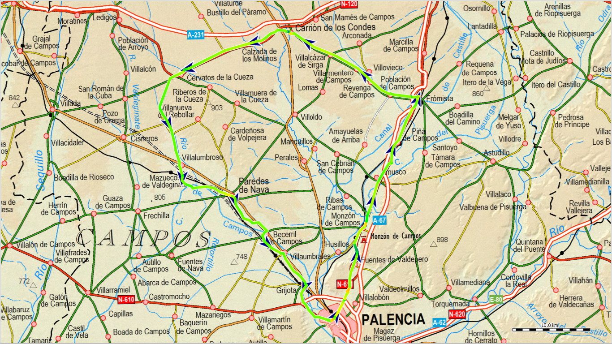
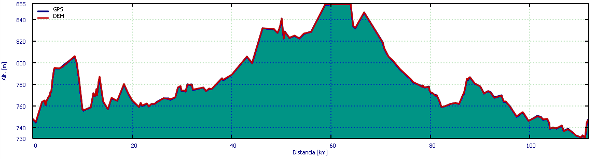

Palencia Carrión por Frómista y Cervatos¶
Hoja de planificación. Podría contener errores.

Bucle cicloturista cómodo pasando por multitud de localidades repletas de historia, tradición, Camino de Santiago, vida rural, gastronomía y paisaje.
Ficha técnica¶

| Distancia | Días | Tipo | Ascensión total | Punto más alto | Punto más bajo | Pendiente mayor (ascenso) | Pendiente mayor (descenso) |
|---|---|---|---|---|---|---|---|
| 112 km | 2 | Circular | 250 m | 855 msnm | 730 msnm | 2'0º | -3'3º |
Plan de ruta¶
Descripción¶
Si hay algo que caracteriza este recorrido es que se trata de un paseo cómodo, sin grandes pendientes y con muchos tramos por carretera, que permitirán avanzar con facilidad. Sin embrago, para disfrutar de lo mucho que hay por ver es buena idea dividir el recorrido en dos.
Carrión de los Condes es un buen lugar para pasar la noche.
Localidades¶
- Palencia 78412 habitantes, todos los servicios.
- Fuentes de Valdepero 451 habitantes, bares, castillo, zona de picnic cerca de una antigua tejera y de la ermita de San Pedro.
- Monzón de Campos 592 habitantes, bares, tienda de alimentación, castillo, alojamiento.
- Amusco 423 habitantes, alimentación, bares.
- Frómista 767 habitantes, todos los servicios.
- Piña de Campos 217 habitantes, bar.
- Población de Campos 129 habitantes, bar, albergue.
- Revenga de Campos 152 habitantes, bar.
- Carrión de Los Condes 2069 habitantes, todos los servicios.
- Villalcázar de Sirga 172 habitantes, bar.
- Villarmentero de Campos 17 habitantes, bar, albergue.
- Calzada de Los Molinos 330 habitantes, bar, alojamiento.
- Cervatos de La Cueza 280 habitantes, bares, alojamiento, zona de picnic.
- Villalumbroso panadería, bar.
- Paredes de Nava 1885 habitantes, todos los servicios.
- Becerril de Campos 727 habitantes, bares.
- Villaumbrales 648 habitantes, bar.
- Grijota 2319 habitantes, bares, alimentación.
Por los alrededores¶
- Villalobón 1690 habitantes, bares, panadería.
- Husillos 320 habitantes, bar.
- Ribas de Campos 143 habitantes, bar.
- Támara de Campos 67 habitantes, bar.
- Amayuelas de Arriba 35 habitantes, bar, albergue.
Consejos¶
- Dada la cantidad de poblaciones por las que se pasa, merece la pena tomarse el viaje con tranquilidad y disfrutar curioseando por ellas.
Rutas enlazadas¶
Palencia:
- Chozos de Dueñas
- La Nava y Carejas
- Palencia Autilla del Pino
- Palencia Carrión por Támara y San Cebrián
- Palencia Fuentes de Valdepero
- Palencia Soto Alburez
Fuentes de Valdepero:
Monzón de Campos:
Amusco:
Frómista:
Piña de Campos:
Población de Campos:
Revenga de Campos:
Villalcázar de Sirga:
- Carrión Herrera por Bárcena y Osorno
- Carrión Herrera por Saldaña y Castrillo
- Palencia Carrión por Támara y San Cebrián
Villarmentero de Campos:
Paredes de Nava:
Becerril de Campos:
Villaumbrales:
Grijota:
- La Nava y Carejas
- Palencia Autilla del Pino
- Palencia Carrión por Támara y San Cebrián
- Palencia Soto Alburez
Villalobón:
- Palencia Autilla del Pino
- Palencia Carrión por Támara y San Cebrián
- Palencia Fuentes de Valdepero
- Palencia Soto Alburez
Husillos:
Ribas de Campos:
Támara de Campos:
Amayuelas de Arriba: